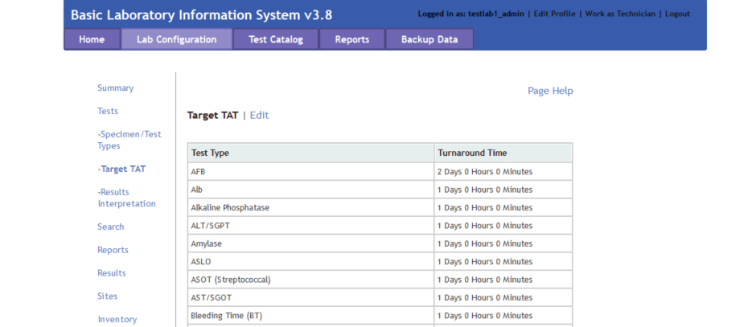
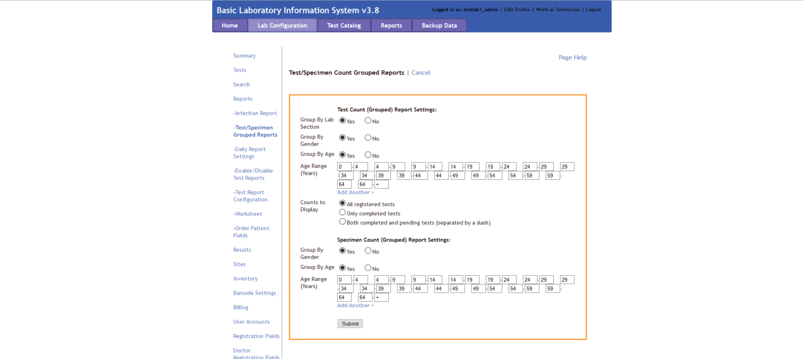
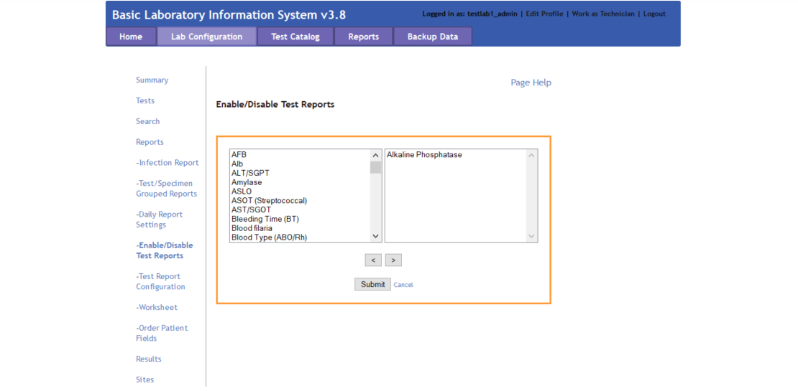

C4G BLIS User Guide Version 3.8
User Instruction Manual Rev 3.8
C4G Basic Laboratory Information System is a collaboration between Computing-for-Good (C4G) at Georgia Tech, the CDC, and participating PEPFAR countries.
Table of contents
Introduction to C4G BLIS
The Basic Laboratory Information System, BLIS, is a freeware Web-based system that can be installed in a local, district, or national laboratory. It is a tool that can help to standardize data, which improves the ability to run useful reports and can both give a realistic picture of laboratory services and assist with staff and budget planning. With enough data, BLIS can be used to track disease prevalence over time.
Features of BLIS include: - One-time entry of each unique patient - Standardization of data collected (allowable entries for specimen type, test type, patient data, reagents are set at MOH level and then entered consistently throughout a country) - Customization to a country’s needs - Ability to track lab supplies such as test kits, reagents - Ability to run reports as specified by a country - Automatic alerting of data values that may be out of range(reference ranges and panic values are set at the regional or national level) - Daily logs to be reviewed for data verification - Simple data backup to a zipped file - [NEW] BLIS running on a cloud provider - [NEW] Manual data backup to a version of BLIS running on a remote server
As with any properly implemented electronic record system, BLIS may be found over time to improve data accuracy and reduce costs in laboratories. Benefits already seen in labs using BLIS: - Reduced burden for technicians, as results are available soon after testing - Improved consistency of data entry - Ability to view patient history and track samples - Ability to aggregate data and analyze data patterns and trends at a regional or national level - Printed patient records in place of handwritten records - Printed daily logs that make the reports look like the paper forms used in the laboratory
BLIS Start-Up Guide
There are three versions of BLIS that currently exists.
Firstly, BLIS on Windows was the original version developed for end-users. Stand-alone versions, updates, and packaged content are still publicly available on the C4G BLIS home page, accessible here.
Secondly, BLIS on the Cloud is a newly deployed version of BLIS that is capable of running on a Cloud Provider, and was originally intended to be used as an online backup database for aggregating country-wide data for analysis. For instructions on installing BLIS on the Cloud, please see the Developer's Documentation.
Thirdly, BLIS in a Devcontainer is an instantiation of BLIS that allows for developers to specify the development environment, and is intended to be used by developers only. For instructions on installing BLIS in a Devcontainer, please see the Developer's Documentation.
BLIS For Windows
BLIS was originally developed to run on Windows using a discontinued project called Server2Go. This packages Apache2, MySQL, PHP, and Firefox together into a package that can be run all at once on a desktop computer. BLIS on Windows is the primary way that end-users are using BLIS, but can and should be used by developers to test updates.
Prerequisites
Installing command-line tools can be done with a Windows package manager such as Scoop.
git
Instructions for Installation
- Navigate to the C4G BLIS home page. B. Click on the Download tab in the top menu bar, then click Download BLIS v3.8 Complete.
- Follow all instructions on the Download page.
Starting BLIS
- Double-click on the BLIS.exe file.
- A page requesting login information will appear. Enter in your login credentials.

Stopping BLIS
- After your session is complete, click the Logout button in the top right pane of the screen.
- A popup window will appear where you can rate your experience with C4G BLIS and write any comments you may have. After entering your feedback, press the Submit button to fully logout. Alternatively, you may press Skip to logout immediately without providing any feedback. If you do not wish to logout, press CLOSE.

Roles in BLIS
There are three roles in BLIS.
Firstly, Directors (also referenced to as country directors) are a role held by a single individual at the management level of each country. The roles of Directors are to oversee many laboratories using BLIS, summarize data trends from uploaded patient data from across the country, and work with C4G developers to provide user feedback for future versions of BLIS.
Secondly, Managers (also referenced as admin users) are the managerial supervisors of laboratories. The roles of Managers are to maintain the user permissions to individual labs and alter individual lab configurations as needed.
Thirdly, Technicians are the majority of BLIS users. The role of Technicians is to enter in and verify patient data.
Director Overview
Manager Overview
The manager interface allows the Manager to do the following: 1. Add, edit, and delete users 2. Change the laboratory configuration settings in the Lab Configuration tab in the top menu bar 3. Generate and print reports in the Reports tab in the top menu bar
Lab Configuration
The laboratory configuration can be changed by Managers or admin users of BLIS. Here, you can change how reports are generated, what patient data is collected, as well as various other settings. In general, laboratory settings are usually initialized by the Country Director, but can be modified to suit individual labs' needs.
The menu selection for the Lab Configuration tab - accessible in the top menu bar - is as follows: 1. Summary 2. Tests 3. Search 4. Reports 5. Results 6. Sites 7. Inventory 8. Barcode Settings 9. Billing 10. User Accounts 11. Registration Fields 12. Doctor Registration Fields 13. Modify Language 14. Setup Local Network 15. BLIS Online 16. External Interface 17. Revert to Backup 18. Manage Backup Keys 19. Export Configuration
Summary
The Summary page displays information about the laboratory. Specific information includes the Facility Name, Location, Lab Manager, available Specimen Types, available Test Types, and Technician Accounts allocated to the specific laboratory.

Tests
The Tests page has a drop down menu that opens up to reveal three different options: Specimen/Test Types, Target TAT, and Results Interpretation.
Specimen/Test Types
The Specimen/Test Types page allows you to set the specimen and test types as appropriate for your country. Click Show to reveal hidden panes and Hide to close the panes. Check the box for each specimen type collected or test done at this facility, and click Submit to save.
Target TAT
The Target TAT page displays turnaround times for tests. To enter or change turnaround time, click Edit. The number and unit (such as “24 hours”) change to a text field and a drop-down list. Enter the desired number and choose Hours or Days. When finished, click the Submit button to save changes, or Cancel to discard changes. These options are below the list.

Results Interpretation
The Results Interpretation page allows you to specify the interpretation for multiple ranges of values for each test type. To view or edit an existing test’s result, choose the test type from the drop-down list and click the Search button. The current interpretation appears. Edit using the text boxes.
To add a new range to the list, click the Add Another link and enter data in the text boxes. Click the Submit button to save changes, or Cancel to discard them.
Search
The Search page allows you to configure what results are displayed for each patient when a search is executed. It also allows you to change how many results are displayed on each page.
Reports
The Reports page has a drop down menu that opens up to reveal seven different options: Infection Report, Test/Specimen Grouped Reports, Daily Report Settings, Enable/Disable Test Reports, Test Report Configuration, Worksheet, and Order Patient Fields.
Infection Report
The Infection Report page generates an aggregate report of laboratory test results for a particular period for one or all lab sections. The tests listed in the report are the ones checked to include on the Specimen/Test Types page. Click Edit to make changes to the details reported. When finished, click Submit button to save changes, Preview to view the report, or Cancel to discard changes.
Test/Specimen Grouped Reports
The Test/Specimen Grouped Reports page allows you to set the Test Count (Grouped) Report settings and the Specimen Count (Grouped) Report settings. Click Edit to change settings. When finished, click the Submit button to save changes, or Cancel to discard changes.

Daily Report Settings
The Daily Report Settings page allows you to set the layout of the Patient Report, Daily Log - Specimens, and Daily Log - Patients. Use the drop-down to select the report type, then click Search. Check or un-check boxes to show or hide patient, specimen, and test information. If desired, you can upload a .jpg logo file to appear on the report. When finished, click the Submit button to save changes, or Cancel to discard changes. These options are below the list.
Enable/Disable Test Results
The Enable/Disable Test Results page allows you to enable or disable specific tests. Items on the left side are disabled; move the test items to the right side to enable them. When finished, click the Submit button to save changes, or Cancel to discard changes.

Test Report Configuration
The Test Report Configuration page allows you to visualize your enabled test configurations. Use the drop-down to select the test type from the enabled test list, then click Search. Click Edit to edit the configuration of the reported test data. Check or un-check boxes to show or hide patient, specimen, and test information. When finished, click the Submit button to save changes, or Cancel to discard changes
Worksheet
The Worksheet page allows you to create templates for gather patient data in the lab. In lab settings where data are not entered at the point of service, the data entry staff can enter the laboratory's patient information and ordered tests, then print the worksheet so that lab technicians can write test results and other data to be entered into BLIS.
Select the Lab Section and Test Type and click Search to edit the report format. To edit a custom report, click Edit to the right of the report. To create a new custom worksheet, click the Add Custom Worksheet link at the bottom of the list.

Results
The Results page allows you to edit the parameters displayed in the batch results page. Currently, the editable data is limited to Patient information.
Sites
The Sites page allows you to add, modify, or remove specimen collection sites to the laboratory records. When first spawning a laboratory, only one site - the default site - will exist.
Additional information about the site can be provided in the textboxes - currently, BLIS supports adding in District and Region information. To add another site, click on the Add Another hyperlink at the top and fill in textbox with the new site name, then click Submit. To go back, click Cancel.
Inventory
The Inventory page is a list of any existing reagents being tracked in BLIS. To add another, click the Add Item link above the list and input the name, unit of measurement associated with the reagent, and any miscellaneous remarks about the reagent. After pressing Submit, don't forget to add the item's stock. On the Current Inventory page, you can Log Stock Usage, Add Stock, or Edit Details.
Barcode Settings
The Barcode Settings page allows you to configure the settings for barcode formats. Click on the Page Help for more details. After changing the settings, click Submit to save your edits.
User Accounts
Registration Fields
Doctor Registration Fields
Modify Language
Setup Local Network
BLIS Online
The BLIS Online page allows you to enter an IP address of a BLIS on the Cloud server. For more details about BLIS on the Cloud and how to create your own instantiation, please read the Developer's Documentation.
Please enter the IP address into the text box and click Submit. A message stating "BLIS Cloud hostname updated successfully!" will pop up if submitted correctly.
External Interface
Revert to Backup
Manage Backup Keys
The Manage Backup Keys page allows you to create, manage, or delete key pairs in order to encrypt laboratory backup data. Encrypting laboratory backup data with a unique key-pair ensures that only the personnel with the correct private key will be able to successfully decrypt the encrypted data with the correlated public key.
The home screen of the Manage Backup Keys page displays the list of currently active public keys. In the example image below, only one public key is available for use, with a key alias of "my_pubkey".
Disable Encrypted Backups
Toggle this button to disable or enable encrypted backups. It is recommended to enable encrypted backups to protect private patient information.
Download Public Key
This button opens a popup window prompting the user to download a public key. This key should be saved onto the computer.
Add Key Alias
To add a new public key, click Add Key Alias. Fill free to enter in any key alias names here. We recommend entering in some identifying information that describes the origin of the public key. For example, if the public key was provided by the country director, the key alias name could be "country_director_pubkey".
To upload the public key, click Browse and use the File Upload navigational controls to select the desired public key (ending in a .blis file extension). After selecting the correct public key, click Add to add the public key to the list of currently active public keys, or Cancel to discard changes.
Export Configuration
Test Catalog
Reports
Backup Data
The Backup Data feature was created for two reasons - to revert to a previously backed-up copy in cases of system failure, but also to create a backup file of the current laboratory patient data for uploading to a BLIS on Cloud version.
For example, one intended use of the second scenario would be to upload the current laboratory data to the director's instantiation of BLIS. A conglomeration of multiple labs' data would permit the director to visualize larger trends in the healthcare data across several laboratories. This would aid the director in understanding the needs of individual labs, and permit them to mobilize aid catered to the specific needs of each laboratories.
The below image is the default view of the Backup Data page.
Backup Data with Pre-Existing Key
If a public key has already been registered to the personnel account through the Lab Configuration > Manage Backup Keys functionality, then the key should appear in the drop-down menu. In the image below, my_pubkey is a pre-existing public key that had been previously registered. Please select the key from the drop-down menu.
Backup Data without Pre-Existing Key
If the desired public key has not already been registered to the account, then please select New Key... from the drop-down menu. Two new boxes should appear. Give the key a name (recommend either the lab name or lab ID), and click on the Browse button. Find the public key that was previously downloaded onto your computer and select it to upload.
After selecting the public key of choice, please choose the desired backup (General or Anonymized) and then click Backup to trigger the data backup. A new page should pop up, confirming that the backup was successful. Please click the Download Zip hyperlink to download the zipped file to your Desktop.
Additionally, if a Backup IP Address was previously set in Lab Configuration > BLIS Online page, a copy of the backup will be sent to the BLIS version hosted on the specified IP Address.